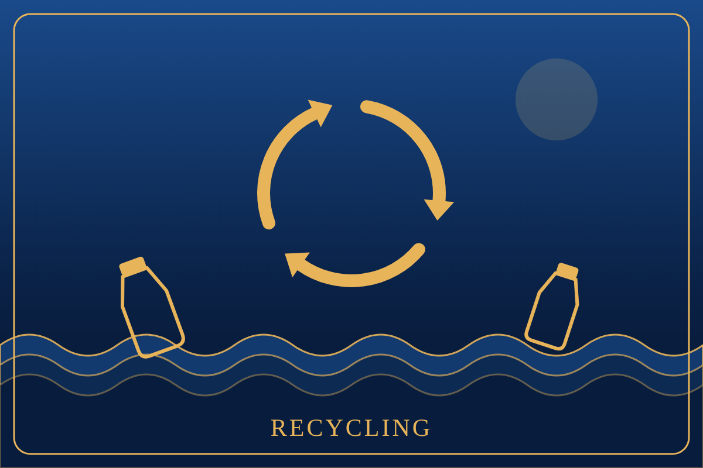
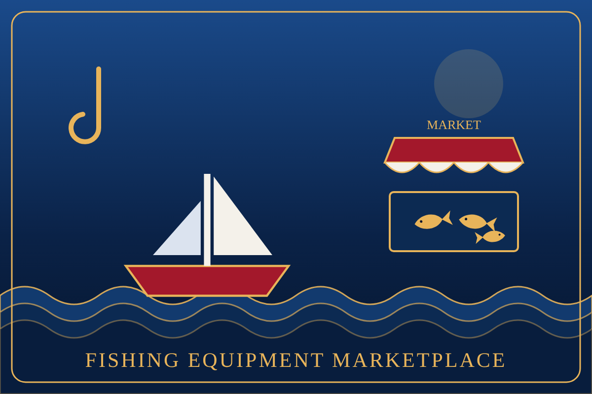
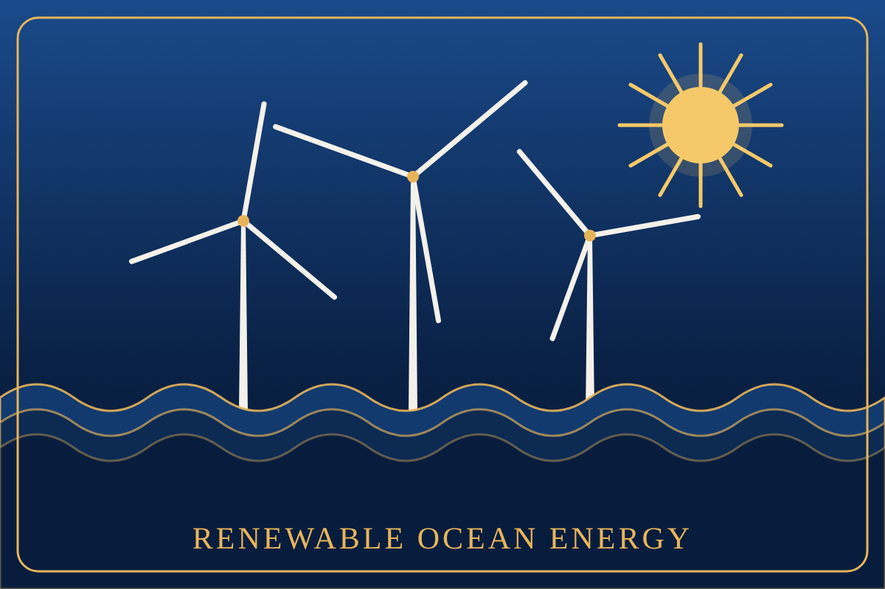
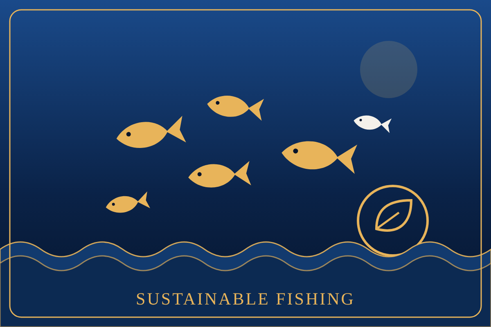
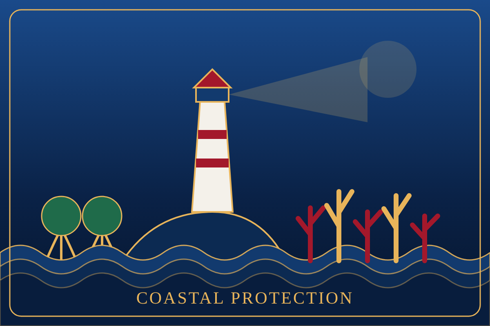

Fishing Equipment Marketplace
A place to buy, sell and reuse nets, rods and boats, so fewer lines end up in the water.

AI and Satellite Tech
Satellite images and AI models spot pollution, illegal fishing and changes in the water early.

Renewable Ocean Energy
Waves, tides and offshore wind can power coastal towns with clean electricity.

Sustainable Fishing
Catch limits, seasons and tracking help fish stocks recover while fishers keep their income.
